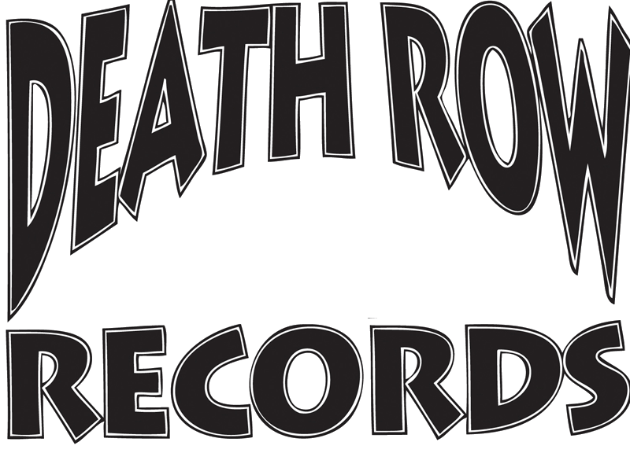
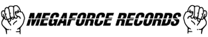
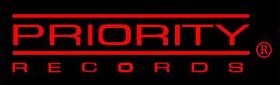
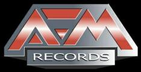
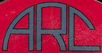

데스 로 레코드 Death Row Records
데스 로 레코드(Death Row Records)는 미국의 힙합 레이블로, 1990년대 서부 힙합과 지 펑크 음반을 중심으로 성장한 음악 브랜드이다. 본사는 베벌리힐스에 있다.
최종 업데이트

데스 로 레코드는 어떤 브랜드인가
이 레이블은 1991년 설립된 뒤 Dr. Dre, Snoop Dogg, 2pac 등 서부 힙합 음악가들의 음반을 발표했다.
《The Chronic》과 《Doggystyle》이 각각 300만 장 이상 판매되고 주요 차트 1위에 오르며 1990년대 초·중반 성공한 음악 레이블 가운데 하나가 됐다. 지 펑크와 갱스터 힙합을 중심으로 서부 힙합의 흐름을 이끌었으며, Bad Boy Record와 대립하기도 했다.
현재까지 레이블에서 발매한 앨범의 판매량은 1000만 장을 넘었다. 핵심 음악가들의 이탈과 2pac의 사망 이후 부도를 겪었으나 재설립됐다.
데스 로 레코드는 어떻게 시작되고 성장했나
1991년 Suge Knight, Dr. Dre, The D.O.C.가 설립했으며, Suge Knight는 캘리포니아에 독자적인 회사를 세웠다.
Dre는 N.W.A와 Ruthless Records를 떠난 뒤 이곳에서 작업을 시작했고, The D.O.C.는 설립 초기 레이블을 지원했다. Dre의 첫 솔로 음반 《The Chronic》과 Snoop Dogg의 《Doggystyle》이 연이어 성공하며 레이블이 성장했다.
1995년에는 수감 중이던 2pac의 보석금을 지원해 영입했고, 《All Eyez On Me》의 성공으로 전성기를 이어갔다. 1996년 Dr.
Dre가 떠난 뒤 다른 음악가들도 차례로 이탈했다.
데스 로 레코드의 브랜드 아이덴티티는 무엇인가
서부 힙합 음악가들의 주요 음반을 통해 지 펑크와 갱스터 힙합의 확산에 관여했으며, 1990년대의 대표적인 서부 힙합 레이블로 구분된다.
데스 로 레코드의 대표 제품과 서비스는 무엇인가
대표 음반인 《The Chronic》은 300만 장 이상 판매되고 빌보드 랩 차트 1위를 기록했으며, 지 펑크라는 힙합 장르를 개척한 작품으로 서술된다. Snoop Dogg의 《Doggystyle》도 약 300만 장 이상 판매되고 빌보드 200 1위에 올랐다.
《Dogg Food》는 약 200만 장이 팔렸으며 빌보드 200 1위를 기록했다. 2CD 음반 《All Eyez On Me》는 빌보드 200과 랩 앨범 차트 1위에 올랐고 미국에서 600만 장 이상 판매됐다.
이후 Amaru Record와 함께 2pac의 사후 앨범을 작업했으며, 관련 음반 발매를 이어가고 있다.
데스 로 레코드는 지금 어떤 상태인가
위키데이터상 모기업은 Lionsgate Canada이며 본사는 미국 베벌리힐스에 있다. Dre와 Snoop Dogg를 비롯한 음악가들의 이탈과 2pac의 사망, Suge Knight의 구속 이후 한때 부도를 겪었으나 다시 설립됐다.
근거 본문은 현재 남아 있는 가수를 2pac으로 서술하며 사후 앨범을 계속 발매한다고 기록한다.
데스 로 레코드 로고는 어떻게 변해왔나
자주 묻는 질문
데스 로 레코드는 어느 나라 브랜드인가요?
데스 로 레코드는 미국의 미디어·엔터테인먼트 브랜드입니다.
데스 로 레코드는 언제 설립되었나요?
데스 로 레코드는 1991년 설립되었습니다.
데스 로 레코드의 브랜드 아이덴티티는 무엇인가요?
서부 힙합 음악가들의 주요 음반을 통해 지 펑크와 갱스터 힙합의 확산에 관여했으며, 1990년대의 대표적인 서부 힙합 레이블로 구분된다.
데스 로 레코드의 대표 제품은 무엇인가요?
대표 음반인 《The Chronic》은 300만 장 이상 판매되고 빌보드 랩 차트 1위를 기록했으며, 지 펑크라는 힙합 장르를 개척한 작품으로 서술된다.
데스 로 레코드는 어느 기업이 소유하고 있나요?
위키데이터상 모기업은 Lionsgate Canada이며 본사는 미국 베벌리힐스에 있다.
데스 로 레코드의 창업자는 누구인가요?
데스 로 레코드의 창업자는 닥터 드레, The D.O.C., 슈그 나이트입니다(위키데이터 기준).
데스 로 레코드의 본사는 어디에 있나요?
데스 로 레코드의 본사는 베벌리힐스에 있습니다(위키데이터 기준).
출처와 검증
데스 로 레코드 관련 참고: 공식 웹사이트 · 위키데이터 Q847018 · 한국어 위키백과 · 영어 위키백과. 브랜드명은 한글과 원어를 함께 표기하되 데이터에 없는 표기는 만들지 않습니다. 기원 국가·설립연도는 검수된 정의문에서 확인된 값을 우선하고, 없을 때만 공식 웹사이트 URL이 일치하는 위키데이터 개체의 값을 씁니다. 위키데이터 값은 2026-09-20 기준입니다.
함께 읽을 브랜드
 워너 브라더스Warner Bros. Entertainment미디어·엔터테인먼트
워너 브라더스Warner Bros. Entertainment미디어·엔터테인먼트 빌보드Billboard미디어·엔터테인먼트유니버설 뮤직 그룹Universal Music Group미디어·엔터테인먼트
빌보드Billboard미디어·엔터테인먼트유니버설 뮤직 그룹Universal Music Group미디어·엔터테인먼트
메가포스 레코드Megaforce Records미디어·엔터테인먼트
프라이오리티 레코드Priority Records미디어·엔터테인먼트
AFM 레코드미디어·엔터테인먼트RCA 레코드미디어·엔터테인먼트
아메리칸 레코드 코퍼레이션American Record Corporation미디어·엔터테인먼트